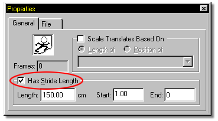
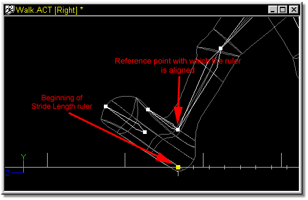
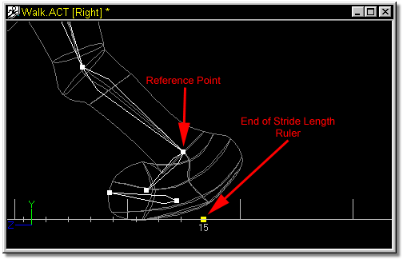
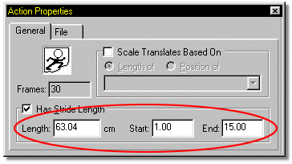
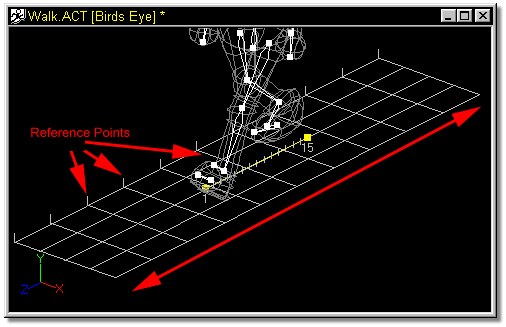
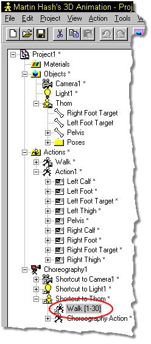
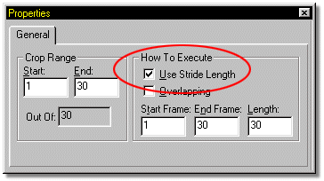

Keeping a Figure from slipping while traveling along a path must always be
considered. "Stride Length" helps the program determine just how far a Figure
needs to move each frame to make the feet appear solidly affixed to the ground
with each step. Usually, you will create a "walk.act" Action that can be cycled
to make a Figure walk.
Keeping a Figure from slipping while traveling along a path must always be
considered. "Stride Length" helps the program determine just how far a Figure
needs to move each frame to make the feet appear solidly affixed to the ground
with each step. Usually, you will create a "walk.act" Action that can be cycled
to make a Figure walk.
To set the Stride Length for this "Walk" Action, click the action name in the Actions list section of the Project Workspace. On the Properties Panel, click in the “Has Stride Length” box. Be sure that you are looking at your figure from a side or Bird’s Eye view.

At the point where your characters foot first touches the ground (generally frame 1), slide the front end of the yellow stride length indicator under a reference point on the foot (a bone is a good reference point).

Advance frames until the same foot reaches the back of a step (just before it comes off the ground). Slide the back end of the yellow stride length indicator beneath the foot until it lines up with the reference point used in setting the beginning of the stride.

The stride of the character has now been set. The Properties Panel will reflect the beginning and end frames of the stride, as well as the length (in cm).

From a Bird’s Eye view, a reference grid is visible beneath the characters feet (it can also be seen from a side view, but offers better visual feedback from Bird’s Eye). Stepping through the frames with the plus (+) and minus (-) keys on the numeric keypad will cause this grid to move forward/backward. By lining the foot up with one of the splines on the reference grid, any adjustments that are necessary can be made to the objects stride to prevent slipping.

Stride length can also be used to keep round objects such as wheels from slipping. At frame 1, move the front of the stride length ruler to the center of the wheel. Advance frames to where the wheel completes one revolution. Move the back of the stride length ruler to the perimeter of the wheel.
If you make a mistake creating a Stride Length, or you simply want to remove it from a character, uncheck the “Has Stride Length” box on the Properties Panel.
Once a stride length has been defined for an action you must click on the action name in the Project Workspace:

Then verify that the “Use Stride Length” box on the General tab of the Properties Panel is checked.

Tell me how to:
Create Skeletal Motions
Clear Skeletal Motions
Save Skeletal Motions
Use Stride Length
Use Poses
Use Dopesheets